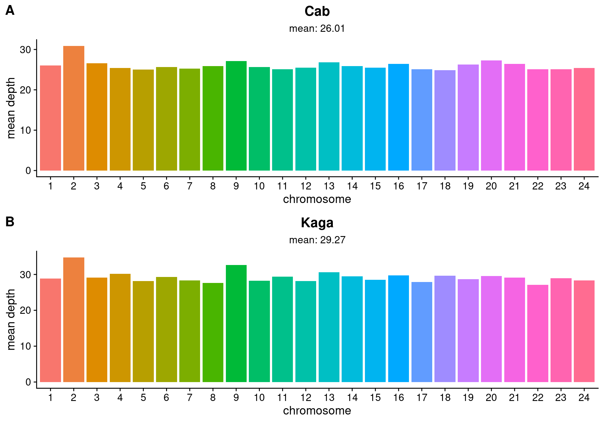

Code
# Set variables
IN = list.files("/hps/nobackup/birney/users/ian/somites/coverage/hdrr/bwamem2",
full.names = T) %>%
as.list()
OUT_PNG = "/hps/software/users/birney/ian/repos/somites/book/plots/coverage/F0_coverage.png"
OUT_PDF = "/hps/software/users/birney/ian/repos/somites/book/plots/coverage/F0_coverage.pdf"
# Read in files
names(IN) = IN %>%
unlist() %>%
basename() %>%
stringr::str_remove(".txt")
dat_list = purrr::map(IN, function(FILE){
readr::read_tsv(FILE) %>%
dplyr::rename(chrom = '#rname') %>%
dplyr::filter(chrom != "MT") %>%
dplyr::mutate(chrom = factor(chrom, levels = 1:24))
})
# Plot
fig_cab = dat_list[["Cab"]] %>%
ggplot() +
geom_col(aes(chrom, meandepth, fill = chrom)) +
cowplot::theme_cowplot() +
#facet_wrap(~SAMPLE, nrow = 2) +
scale_x_discrete(breaks = 1:24) +
guides(fill = "none") +
xlab("chromosome") +
ylab("mean depth") +
ggtitle("Cab",
subtitle = paste("mean: ",
round(mean(dat_list[["Cab"]]$meandepth),
digits = 2),
sep = "")
) +
theme(plot.title = element_text(hjust = 0.5),
plot.subtitle = element_text(hjust = 0.5))
fig_kaga = dat_list[["Kaga"]] %>%
ggplot() +
geom_col(aes(chrom, meandepth, fill = chrom)) +
cowplot::theme_cowplot() +
#facet_wrap(~SAMPLE, nrow = 2) +
scale_x_discrete(breaks = 1:24) +
guides(fill = "none") +
xlab("chromosome") +
ylab("mean depth") +
ggtitle("Kaga",
subtitle = paste("mean: ",
round(mean(dat_list[["Kaga"]]$meandepth),
digits = 2),
sep = "")
) +
theme(plot.title = element_text(hjust = 0.5),
plot.subtitle = element_text(hjust = 0.5))
# Put together
out = cowplot::plot_grid(fig_cab,
fig_kaga,
align = "hv",
axis = "tblr",nrow = 2,labels = c("A", "B"),label_size = 16)
out
rule coverage_plot_F0 in https://github.com/brettellebi/somites/blob/master/workflow/rules/08_extra.smk.